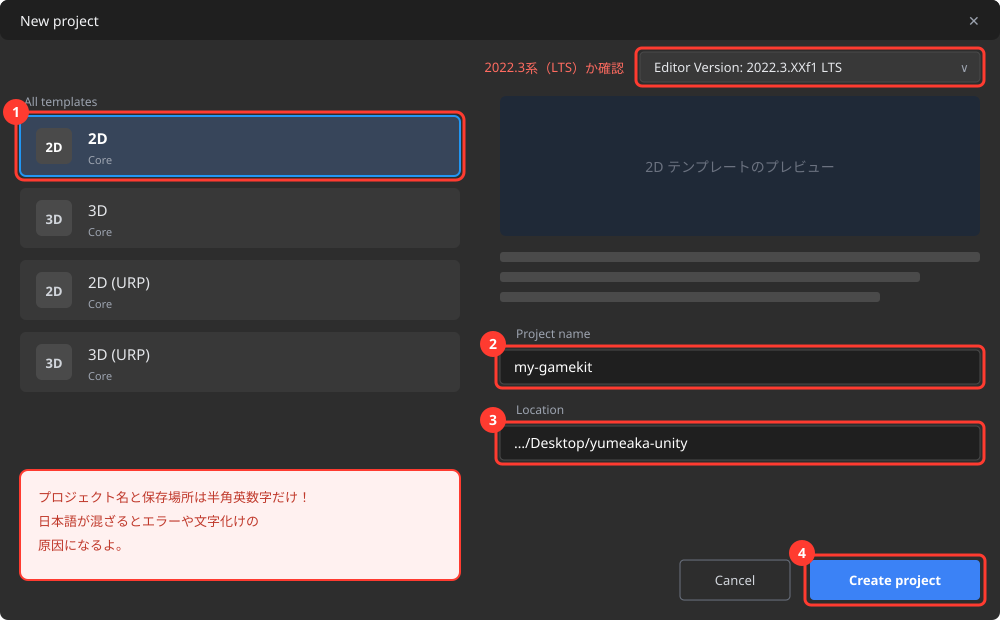
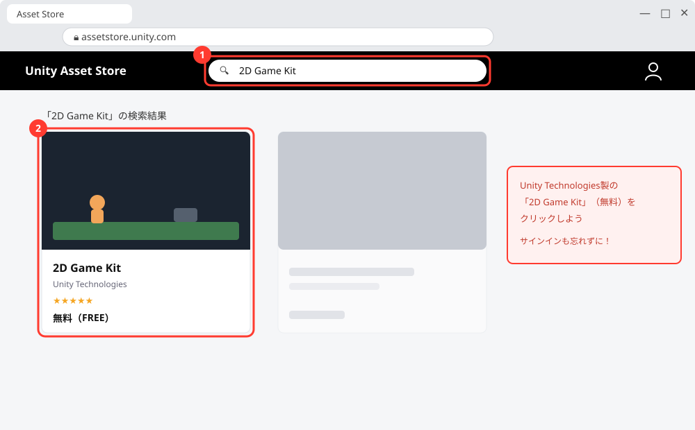
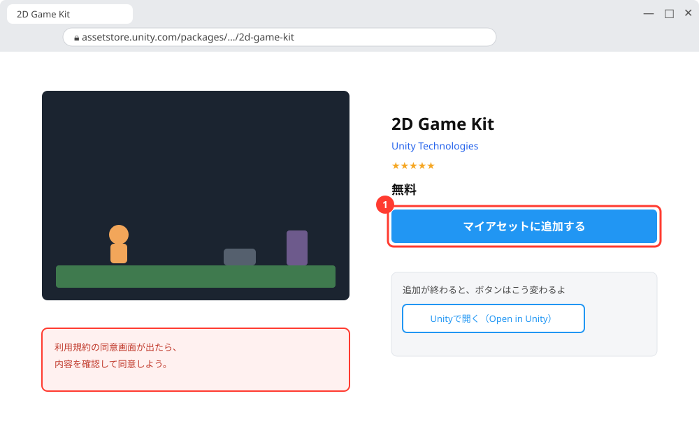
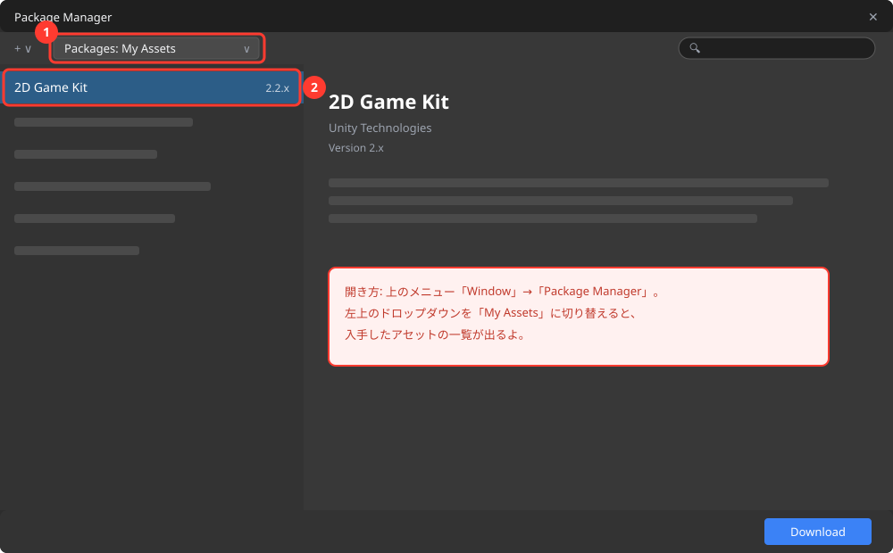
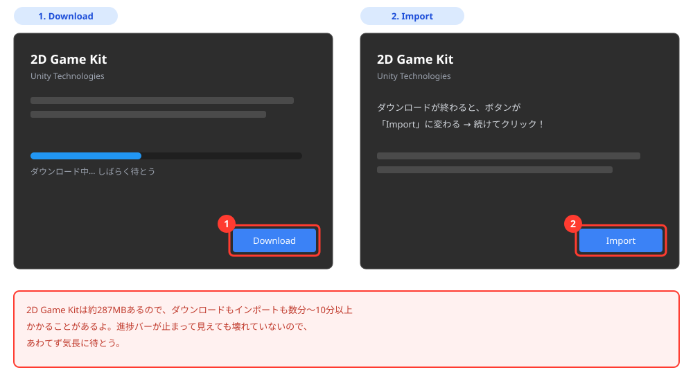
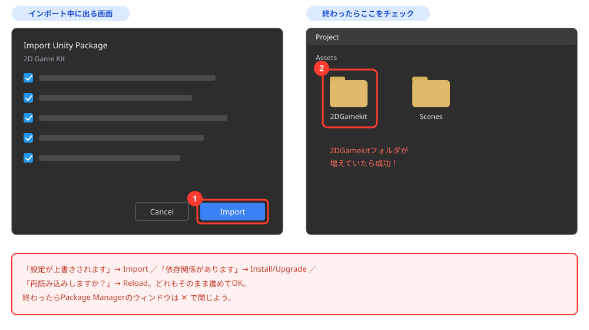
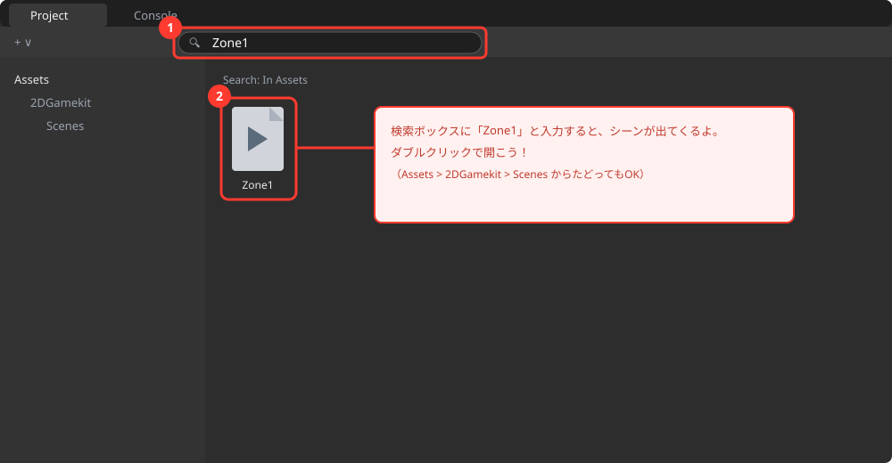

ゲームキットを手に入れて遊ぼう 〜2D Game Kitをはじめる〜
🎯 この章でできるようになること
- 「2D Game Kit」がどんなものか説明できる
- Asset Store（Unityの素材ストア）から2D Game Kitを自分のPCに入れられる
- ▶（再生）でサンプルゲーム「The Explorer」を実行して、実際に遊べる
- Unityエディタの5つの画面の名前と役割がわかる
※ 講習の最初に、第0章の準備がうまくいったか全員で確認します。
できなかった人も大丈夫、ここで一緒に解決するよ。
1-1. 2D Game Kitってなに？
この講座で使うのは、Unity公式の「2D Game Kit（2Dゲームキット）」。
2Dアクションゲームを作るための素材と仕組みがぜんぶ詰まった、ゲーム作りのスターターキットです。
キャラクター、敵、地面のタイル、扉やスイッチなどの仕掛け、音、エフェクト……全部入り。
しかもプログラムを1行も書かずに、部品を置くだけでゲームが作れるようになっています。

主人公の探検家Ellen（エレン）を操作して冒険するよ
さらにこのキットには、キットの部品だけで作られた完成ゲーム「The Explorer（ジ・エクスプローラー）」が丸ごと入っています。
この講座の進め方はシンプル。
完成ゲームで遊んで仕組みを知る → 同じ部品で自分のステージを作る → どんどん改造する。
最終回には、キミだけのオリジナル2Dアクションゲームが完成しているはず！
完成ゲームThe Explorerと、ステージ作りに使える部品（タイル・敵・仕掛け）が入った改造キットだよ。
💡 この講座で使うUnityは「Unity 2022.3 LTS」（第0章でインストールしたもの）。
2D Game Kitはサイズが約287MBと大きめなので、この章ではダウンロード待ちの時間も出てきます。
あせらずのんびりいこう。
1-2. 入れ物になる2Dプロジェクトを作ろう
まずは、2D Game Kitを入れるための空のプロジェクトを作ります。
プロジェクトは「ゲーム1本分のデータをまとめた入れ物」だったね（第0章でも1回作ったよ）。
Unity Hubを起動して、左メニューの「Projects」→ 右上の「New project」（新しいプロジェクト）をクリック。
画面上部のエディターバージョンが 2022.3系（LTS）になっていることも確認しよう。
テンプレートの一覧から「2D」（2D Core）を選びます。
右側の設定はこうしよう。
- Project name:
my-gamekit - Location（保存場所）: 第0章で作ったデスクトップの
yumeaka-unityフォルダ
⚠️ プロジェクト名と保存場所は半角英数字だけにすること。
通り道（パス）に日本語が入ると、エラーや文字化けの原因になります。
設定できたら「Create project」をクリック。
Unityエディタが開くまで数分待ちます。

画面イメージ図（実際の画面と多少異なる場合があります）
1-3. Asset Storeで「2D Game Kit」を手に入れよう
2D Game Kitは、UnityのAsset Store（アセットストア）という公式のオンラインストアで配布されています。
ゲームの素材（アセット）を売り買いできるお店で、無料のものもたくさんあるよ。
お店での買い物と同じで、「ストアのサイトで入手 → Unityに取り込む」の2段階で進みます。
画像・音・3Dモデル・プログラムなど、ゲームを作る材料ぜんぶをまとめてこう呼ぶよ。
ブラウザ（ChromeやEdgeなど）で assetstore.unity.com を開きます。
画面右上の人型アイコンから、第0章で作ったUnity IDでサインインしよう。
（サインインを忘れると、あとの「入手」ボタンが押せません）
ページ上部の検索バーに「2D Game Kit」と入力して検索します。
Unity Technologies製の「2D Game Kit」（無料）が見つかるので、クリックしてページを開こう。

画面イメージ図（実際の画面と多少異なる場合があります）
「マイアセットに追加する」（英語表示なら Add to My Assets）ボタンをクリック。
利用規約の同意画面が出たら、内容を確認して同意します。
ボタンの表示が「Unityで開く（Open in Unity）」に変われば、キミのアカウントのMy Assets（入手済みリスト）に追加された合図。
お店で「無料で購入」した状態だよ。ダウンロードはまだ先。

画面イメージ図（実際の画面と多少異なる場合があります）
1-4. UnityにDownload / Importしよう
ストアで入手したアセットは、UnityのPackage Manager（パッケージマネージャー）という窓口から受け取ります。
Unityエディタ（my-gamekit）に戻って、上部メニューの「Window」→「Package Manager」を選びます。
開いたウィンドウの左上にあるドロップダウン（Packages: In Project などと表示されている場所）をクリックして、「My Assets」に切り替えよう。
さっき入手した「2D Game Kit」が一覧に出てくるので、クリックして選択します。

画面イメージ図（実際の画面と多少異なる場合があります）
右下（または右上）の「Download」を押してダウンロード開始。
終わるとボタンが「Import」に変わるので、続けてクリックします。
インポートするファイルの一覧が出たら、そのまま「Import」でOK。
⏳ 2D Game Kitは約287MBあるので、ダウンロードもインポートも数分〜10分以上かかることがあります。
進捗バーが止まって見えても壊れていないので、あわてず気長に待とう。
待ち時間に、この章の1-6（エディタ画面の見方）を先に読んでおくのもアリ。

画面イメージ図（実際の画面と多少異なる場合があります）
インポートの途中で、こんなダイアログが出ることがあります。
- 「プロジェクト設定が上書きされます」という警告 → 今回は空のプロジェクトなので「Import」で進めてOK
- 「パッケージの依存関係があります」→「Install/Upgrade」を押して進める
- 「シーンを再読み込みしますか？」→「Reload」を押す
ぜんぶ「キットが正しく動くように設定するね」という確認なので、こわがらなくて大丈夫。
終わったらPackage Managerのウィンドウは×で閉じよう。
Projectウィンドウ（画面下の倉庫）に 2DGamekit フォルダが増えていたら成功！

画面イメージ図（実際の画面と多少異なる場合があります）
1-5. サンプルゲーム「The Explorer」を遊ぼう！
インポートが終わったら、いきなりだけどゲームで遊びます。
どんなゲームなのかを知らないと、作りようも改造のしようもないからね。
これも立派な開発の仕事で、「テストプレイ」と言います。
The Explorerのステージは「Zone1〜Zone5」という5つのシーン（場面）でできています。
Projectウィンドウ（画面下）の検索ボックスに「Zone1」と入力して、出てきたZone1のシーンをダブルクリックで開こう。
（Assets > 2DGamekit > Scenes フォルダの中からたどってもOK）

画面イメージ図（実際の画面と多少異なる場合があります）
画面上部中央の▶（再生ボタン）を押すと、ゲームが始まります。
もう一度▶を押すと停止します。

ここを押すとゲームスタート、もう一度押すと停止
画像出典: Unity Learn（Unity Technologies）
| 操作 | キー |
|---|---|
| 左右に移動 | A（左） D（右） |
| ジャンプ | スペース |
| 攻撃 | O または K |
| 調べる・スイッチを押す（インタラクト） | E |
| 武器の有効・無効を切り替え（デバッグ用） | F12 |
キーを押しても動かないときは、まずゲーム画面を1回クリックしてから操作してみよう。
攻撃が出ないときは F12 を押して武器を有効にしてみてね（開発者用の隠しコマンドみたいなものだよ）。
- 探検家Ellenを操作して、遺跡のステージを進んでいく
- かみつき虫のChomperや、弾を吐くSpitterなどの敵は、攻撃（
O/K）で倒せる - スイッチや感圧パッドを使うと、扉が開くなどの仕掛けが動く（
Eで調べる） - 体力がなくなっても少し前から復活するので、どんどん挑戦してOK
🚨 超重要ルール: 再生中（▶が青いとき）の変更は保存されない！
再生中にゲームの中身をさわって変更しても、停止すると元に戻ります。
編集は必ず▶を押して停止してから。
Unityあるあるナンバーワンのミスなので、今のうちに覚えておこう。
1-6. エディタ画面の見方 〜5つのエリアを覚えよう〜
遊んだところで、開発者としてUnityの画面を見てみよう。
最初はゴチャゴチャして見えるけど、大事なのは5つのエリアだけ。
これから毎回使うので、名前と役割をセットで覚えよう。
「名簿・作業机・情報・倉庫・再生ボタン」と覚えよう
| エリア | たとえ | 役割 |
|---|---|---|
| シーンビュー（Scene） | 作業机 | ゲームの世界を目で見て組み立てる場所 |
| ゲームビュー（Game） | テレビ画面 | プレイする人から見えるゲーム画面 |
| ヒエラルキー（Hierarchy） | 名簿 | 世界に置いたモノの一覧リスト |
| インスペクター（Inspector） | プロフィール帳 | 選んだモノの位置・大きさなどの詳細設定 |
| プロジェクト（Project） | 倉庫 | 画像・音・プログラムなどの素材置き場 |
ヒエラルキー（名簿）を見てみると、Ellen（主人公）やステージの地面など、Zone1の登場人物がもう並んでいるのがわかるよ。
プロジェクトウィンドウ（倉庫）の 2DGamekit フォルダには、これから使う部品がぜんぶ入っている。
この「倉庫から部品を出して、作業机に並べる」のがゲーム作りの基本の動きだ。
キャラも地面もカメラも、ぜんぶ「ゲームオブジェクト」。
ヒエラルキーに並ぶのはこれ。
タイトル画面で1シーン、ステージ1で1シーン、のように使う。
The ExplorerはZone1〜Zone5の5つのシーンでできているよ。
- ズーム: マウスホイールを回す（トラックパッドは2本指で上下）
- 視点の移動: マウスホイールを押し込んだままドラッグ（または手のひらツール）
- 保存:
Ctrl + S⌘ + S。作業の区切りごとに保存するクセをつけよう
1-7. 💪 やってみよう
課題1: The Explorerをすみずみまで探検しよう
▶で再生して、Zone1をできるだけ先まで進んでみよう。
そのあと、「これどうやって動いてるんだろう？」と思った仕掛けを3つ見つけてメモしよう。
この講座では、その仕掛けを自分で置けるようになっていくよ。
ヒントを見る
扉、スイッチ、動く足場、上から落ちてくる箱、テレポートする場所……。
E キーで調べられるものも探してみよう。
時間があったらZone2以降のシーンも開いて遊んでみてOK。
課題2: F12の武器切り替えを試そう
再生中に F12 を押すと、Ellenの武器の有効・無効が切り替わります。
武器を有効にして、O または K で敵（Chomper）を倒してみよう。
逆に武器なしで敵の横を通り抜けられるかも挑戦！
ヒントを見る
F12が効かないときは、ゲーム画面を1回クリックしてから押してみよう。
ノートPCでは Fn キーを押しながら F12 の場合もあるよ。
課題3（チャレンジ）: 名簿と世界の対応を調べよう
▶を停止した状態で、ヒエラルキーに並んでいる名前を上からいくつかクリックして、シーンビューのどこが光る（選択される）か調べよう。
「この名前はゲームのアレか！」というのを5つ言えたら合格。Ellen はどこにいるかな？
ヒントを見る
名前の左に「>」マークがあるものは、中に子どものオブジェクトが入っている（フォルダみたいなもの）。
クリックして開いてみよう。
見つからないときは、名前をダブルクリックすると画面がそこにズームするよ。
1-8. 🚨 つまずきポイント集
ダウンロード／インポートが全然終わらない
原因: 2D Game Kitは約287MBあるので、回線によっては10分以上かかります。
止まっているように見えても、たいてい裏でがんばっています。
直し方: まずは気長に待つ。
30分待っても進まないときは、Package Managerを閉じてもう一度「Download」からやり直してみよう。
講習会場のWi-Fiが混んでいるときは、講師に相談してね。
シーンを開いたら画面がまっピンク！
原因: 画像の表示設定（マテリアル）がうまく読み込めていないときに出る、Unityの「困ってます」のサイン。
インポート直後によく起きる、有名な現象です。
直し方: まずUnityをいったん閉じて、Unity Hubから開き直す。
それでも直らないときは、Package Managerから2D Game Kitをもう一度「Import」しよう。
壊れたわけではないので安心して。
Package ManagerのMy Assetsに2D Game Kitが出てこない
原因1: Asset Storeで「マイアセットに追加する」を押したアカウントと、Unityエディタでサインインしているアカウントが違う。
→ エディタ右上のアカウントアイコンで、同じUnity IDかを確認しよう。
原因2: 追加した直後で一覧が古いまま。
→ Package Manager左上の更新ボタン（ぐるっと矢印のアイコン）を押すか、開き直す。
キーを押してもEllenが動かない
原因1: ゲーム画面が選ばれていない。
→ ゲーム画面を1回クリックしてから操作する。
原因2: 日本語入力がオンになっている。
→ 「半角/全角」キーで日本語入力をオフにする。「英数」キーを押して英字入力にする。
原因3: そもそも▶で再生していない。
→ 再生ボタンが青くなっているか確認！
せっかく変更したのに、停止したら元に戻った
原因: 再生中（▶が青いとき）に変更していた。
再生中の変更は保存されないルールだったね。
直し方: ▶で停止してから、もう一度同じ変更をしよう。
画面のレイアウトがぐちゃぐちゃになった／ウィンドウが消えた
直し方: 画面右上のレイアウトメニュー（またはメニューの Window → Layouts）から Default を選ぶと元どおり。
こわれたわけじゃないので安心して。
まちがって何かを消してしまった
直し方: あわてず Ctrl + Z⌘ + Z（元に戻す）。
ほとんどの操作は取り消せるよ。
💡 15分たっても直らないときは、次の「AIを味方につけよう」の方法で相談してみよう。
1-9. 🤖 AIを味方につけよう
ChatGPTやClaudeなどのAIは、Unity学習の強力な味方です（13歳以上なら保護者の同意のもとで使えます）。
Unityは画面操作が多いので、「今どういう状態で、何をしたら、どうなったか」を言葉で伝えるのがコツです。
この章でのAIの使い所
✅ 良い使い方 — 自分で15分考えてわからなかったら聞く
- 操作で迷子になったら: 「〇〇したいけどボタンが見つからない」を具体的に聞く
- 用語の解説: アセット、シーン、インポートなど、わからない言葉を自分のレベルで説明してもらう
そのままコピペで使えるプロンプト（AIへの指示文）の例:
Zone1のシーンを開いたら画面全体がピンク色になってしまいました。
原因として考えられることを、確認する順番に教えてください。
料理や工作にたとえて、中学生にわかるように説明してください。
🚫 やめておこう
- 課題の「気になる仕掛けメモ」をAIに考えてもらう（自分が作りたいものを見つけるのが今日の練習！）
- AIの答えを動かして確かめずに信じる（AIは古いバージョンのUnityの話をすることもある。
必ず自分の画面で確認）
1-10. ✅ チェックリスト
全部チェックできたら第1章クリア！
🎉 次回はいよいよ、まっさらなシーンに自分のステージを作るよ。
The Explorerで見つけた「気になる仕掛け」も、少しずつ自分で置けるようになっていく。
1-11. 📚 もっと知りたい人へ
- Unity Learn「2Dゲームキットウォークスルー」 — この教科書の元になっている公式ガイド。
先取りしたい人はここを見てみよう - Unity 2022.3 公式マニュアル（日本語） — 困ったときの辞書として使おう
画像出典: Unity Learn『2Dゲームキットウォークスルー』（Unity Technologies）／画像の表示にはインターネット接続が必要です